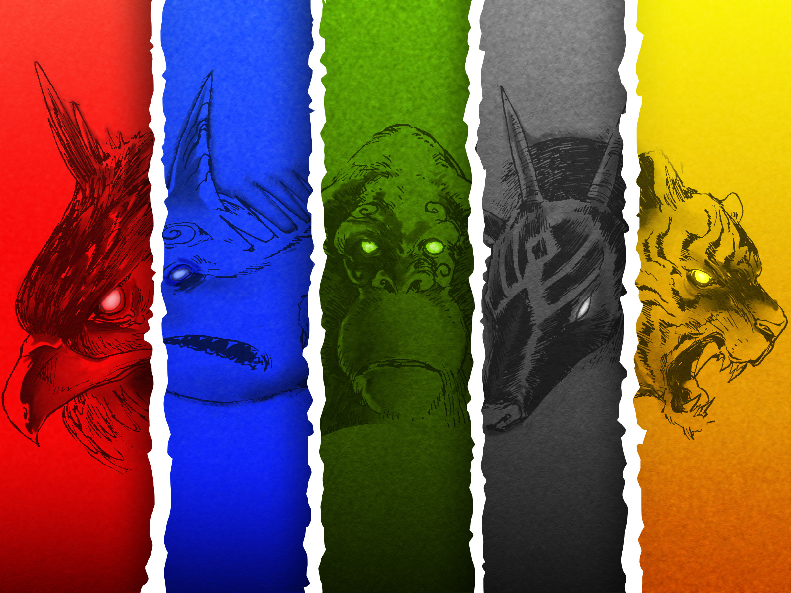

Tempat kelahiran kami sekarang menjadi kota mati.
Hilang ditelan zaman, diselimuti kabut duka, dihancurkan kerakusan manusia, tempat tidak bernama dan telah dilupakan sejarah.
Mungkin mereka benar hidup tetap harus berlanjut, tanpa harus memikirkan segala hal yang pernah terjadi tapi sesuatu yang semakin disembunyikan terlalu rapat maka akan semakin terlihat kebenarannya.
Mudah untuk mengabaikan dunia saat kita dikelilingi oleh gedung tinggi, menara-menara, dan keajaiban teknologi.
Kami tumbuh ditempat ini!
Mereka yang memberitahu kami arti rumah!
Pada orang-orang yang menjaga kami saat kami kehilangan semuanya
Kami masih disini! 
Luasnya lautan dan hamparan air yang mulia adalah ibu mu. Kedalaman lautan sama hebatnya dengan kekuatan hati mu, ketenangan lautan sebelum badai adalah pedoman terbaik pikiran mu, dan ganasnya badai adalah kekuatan mu,
Satria Hiu
Dalam darah mu mengalir daya magis dunia fana yang mampu menghubungkan mu dengan para leluhur terdahulu. Kau adalah salah satu kunci penyeimbang kehidupan ini atas bumi, alam, dan para leluhur. Kekuatan terkumpul sejak dahulu menjadi senjata yang sangat menakutkan untuk mu
Satria Anoa
Langit luas, udara yang mengalir, dan angin yang gejolak adalah mereka yang membesarkan mu. Kebebasan adalah sifat mu, dunia tahu siapa yang dapat menjaganya dari atas. Gunung berapi adalah ibu mu, cicin api yang memberkati nusantara melihat mu dengan kagum. Keperkasaan dan keteguhan selalu bersama
Satria Garuda
Hutan belantara tempat mu dilahirkan dan dibesarkan, roh leluhur yang selalu melindungi nusantara dan tempat kelahiran mu yang selalu menjadikannya terus-menerus bertambah kuat dan mulia. Kelahiran yang diberkati dan dilindungi, kesetiaan tanpa ragu dan ketegasan yang tak mudah digoyahkan.
Satria Harimau
Induk dunia, kekuatan alam selama beratus-ratus tahun yang melindungi dan dilindungi olehnya. Keperkasaan, kekuatan, kebijaksanaan, dan welas asih selalu menyertai mu. Semua dari mereka tahu kalau mereka bisa mengandalkan mu
Satria para satria
ORANG UTAN
lantunkan sajak mantera dengan jari-jemari untuk mengeluarkan aji-ajian guna membebaskan ruh para pelindung Marcapada
nama aji-ajian
sisa waktu
10